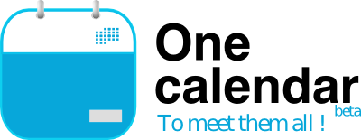
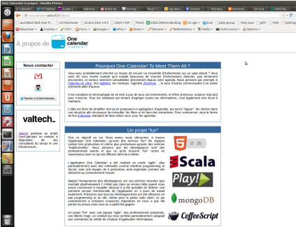

OneCalendar! To meet them all
Compte rendu sur un projet innovant
by Ugo Bourdon / @ugobourdon
OneCalendar! en quelques mots
OneCalendar! à quoi ca sert ?
Je veux pouvoir m'abonner à des évènements, via mon client d'agenda préféré, sur des sujets précis.
OneCalendar! m'offre un moteur de recherche, qui me permet, via des mots clés saisis, de m'abonner à des flux d'évènements, par exemple sur java.
OneCalendar! me fournit un flux ICalendar, pris en compte par tout bon client d'agenda, comme ICal d'apple, google agenda ou microsoft outlook.
OneCalendar! c'est qui ?
Amira Lakhal / @MiraLak
& Nicolas Bétheuil / @wadouk
& Alexandre Pichon / @Alx_Pi
& Ugo Bourdon / @ugobourdon
& Patrick Manoukian / @BabylonZeus
OneCalendar! ca fait quoi ?
moteur de recherche par mots clés sur la base d'évènements OneCalendar
OneCalendar! ca fait quoi ?
indexations et tagging de plusieurs flux d'évènements sur l'agile, le dev, le libre via EventBrite, MeetUp, GoogleGroup ...
OneCalendar! c'est fun !
Les technos !
- Scala
- Playframework!
- MongoDb
- Html5
- coffeescript
Scala
Ce sont les paroles d'Ugo Bourdon qui n'engagent que lui ! :)
Scala ça poutre du poney !
Immutabilité, paradigme full objet et fonctionnel, Monad style! (Option, List, ...)
Faire, en plus simple, en moins de lignes de code, en plus clair !
Scala
case class Toto(name: String = "titi")val t = Toto(); val o = Toto("bobby")t.name // > res0: String = "titi"o.name // > res1: String = "bobby"val result = List(1,2,3) map (x => x * 2) filter (x => x < 4)result should be (List(2))new MyClass() with ProdDepInjectionPlayframework!
framework web développé en Scala, par Sadek Drobi, CTO de Zenexity, ancien de Valtech
Playframework!
- serveur http NIO (asynchrone non-bloquant) Netty
- templating scala compilé pour le html
- sytème de routing des requêtes REST compilé
- ...
- un petit problème, pas facile à tester (au niveau des controlleurs) unitairement pour des raisons de conception ( Sadek pourquoi n'aimes-tu pas le TDD ? :) )
Playframework!
GET /eventCount controllers.Application.eventCount
def eventCount(implicit now: () => Long) = Action {
val jsonResponse = """{"eventNumber":"%s"}"""
.format(EventDao.countFutureEvents)
Ok(jsonResponse).as("application/json")
}
MongoDb
Base de données, dénormalisée, orientée document, géolocalisée, supporte le js, le json
Html 5
OneCalendar! marche partout
coffeescript
Une manière élégante et claire d'écrire du javascript
coffeescript
deleteSuggest : ->
$('#suggest').on "blur", ->
$( '#suggest + ul' ).remove()
Mais aussi les pratiques !
eXtreme programming
- TDD + pair programming (meme au niveau code client)
- KISS - Keep it Simple & Stupid
- DRY - Don't repeat yourself
- Clean Code - le code est écrit pour nos collègues avant tout pas pour la machine
ultra-itération - développement piloté par le feedback
en clair, le choix d'une "feature" est dicté par la valeure mais fortement pondéré par le temps que mettra, le feedback sur cette hypothèse, à nous parvenir
le but est d'itérer le plus rapidement possible, donc avec les plus petit pas possible, de livrer plusieurs mini feature par jour
next-step = le cycle produire-mesurer-apprendre à mener jusqu'en production
design collaboratif
Les décisions sont des décisions d'équipe
On n'intérompt pas un collègue, on le fait participer aux décisions
OneCalendar! extensions
- Cours du soir scala
- Articles de blog
- Soirée Dojo Scala (PSUG)
- Développement d'outils et de lib pour le dev (scala, web, bdd, qualité ...)
- Expérimentation de "best practices" (xp, lean, ...)
Quelques actions marketing !
DevoxxFR 2012
& Devoxx 2012
& Agile France 2012 (thx Eric Lemerdy)
La suite
- autres fonctionalité à venir
- au niveau technique et pratique
- offre commerciale
fonctionalités à venir
- api pour rajouter des évènements dans OneCalendar!
- si l'user ne trouve pas de résultats pour un mot clé, propose un résultat en requêtant sur source (Meetup ...)
- liste des évènements de la base OneCalendar! avec 1 display user friendly
- affichage plus ergonomique de la listes des tags référencé
- OneCalendar! suggest
- ...
niveau technique
- test jasmine (js client) intégré dans le build
- gestion asynchrone des crowling d'event
- test de charge avec gatling
- outils de qualimétrie pour scala
- déploiement continu
- usine loigicielle
- api http, time, ICalendar pour Scala
- ...
Les sous sous
Comment tirer profit au niveau business des travaux de OneCalendar ?
exploitation commerciale de OneCalendar
Pour l'instant on voit pas trop, pas réfléchit et pas forcément via Valtech
offre commerciale developpement itératif
Avec OneCalendar nous avons experimenté quantités de pratiques et techniques de développement ultra-itérative
- eXtreme programming, pratiques d'équipe
- LEAN, Lean Startup
- déploiement facilité
- outils efficaces : scala, play!, mongodb, IDE
- équipes de personnes qui se connaissent, ont les mêmes pratiques, valeurs ...
offre commerciale developpement itératif
offre de dev à Grenelle avec interactions haute avec le client
sans compromis sur nos méthodes de travail ~ xebia studio like
offre commerciale developpement itératif
formation aux nouvelles technos
R&D
Niveau com et marketing => sélection de clients prêt à cette aventure
offre commerciale developpement itératif
Une partie vraiment pas mûre du projet OneCalendar!, à pousser, réfléchir
L'idée de base de OneCalendar! c'est FUN, liberté, qualité et efficacité